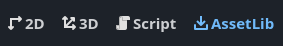
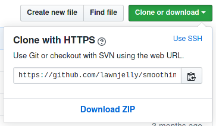
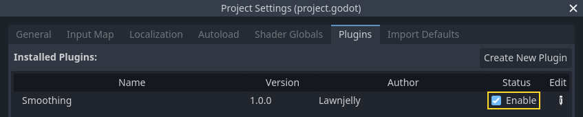

Installing plugins
Godot features an editor plugin system with numerous plugins developed by the community. Plugins can extend the editor's functionality with new nodes, additional docks, convenience features, and more.
Finding plugins
The preferred way to find Godot plugins is to use the Asset Library. While it can be browsed online, it's more convenient to use it directly from the editor. To do so, click the AssetLib tab at the top of the editor:

You can also find assets on code hosting websites such as GitHub.
Note
Some repositories describe themselves as "plugins" but may not actually be editor plugins. This is especially the case for scripts that are intended to be used in a running project. You don't need to enable such plugins to use them. Download them and extract the files in your project folder.
One way to distinguish editor plugins from non-editor plugins is to look for
a plugin.cfg file in the repository that hosts the plugin. If the
repository contains a plugin.cfg file in a folder placed in the
addons/ folder, then it is an editor plugin.
Installing a plugin
To install a plugin, download it as a ZIP archive. On the Asset Library, this can be done using the Download button, either from the editor or using the Web interface.
On GitHub, if a plugin has tags (versions) declared, go to the Releases tab to download a stable release. This ensures you download a version that was declared to be stable by its author.
On GitHub, if the plugin doesn't have any tags declared, use the Download ZIP button to download a ZIP of the latest revision:

Extract the ZIP archive and move the addons/ folder it contains into your
project folder. If your project already contains an addons/ folder, move the
plugin's addons/ folder into your project folder to merge the new folder
contents with the existing one. Your file manager may ask you whether to write
into the folder; answer Yes. No files will be overwritten in the process.
Enabling a plugin
To enable the freshly installed plugin, open Project > Project Settings at the top of the editor then go the Plugins tab. If the plugin was packaged correctly, you should see it in the list of plugins. Click on the Enable checkbox to enable the plugin.

You can use the plugin immediately after enabling it; there's no need to restart the editor. Likewise, disabling a plugin can be done without having to restart the editor.